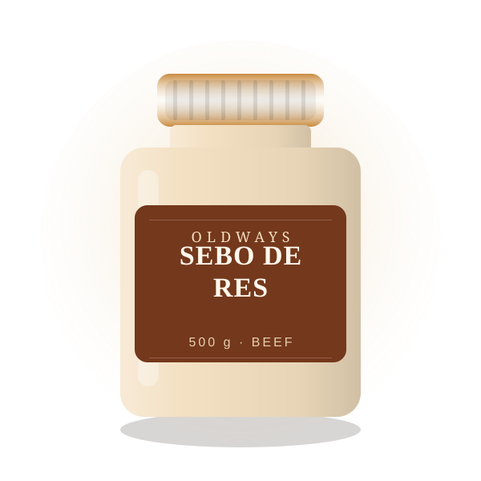
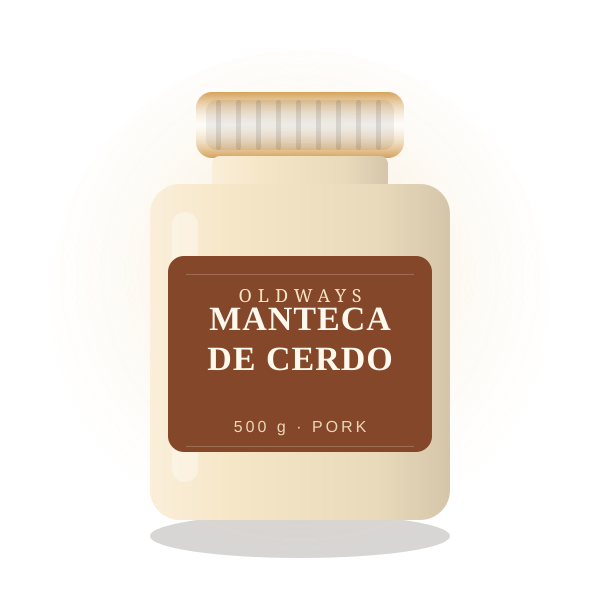

Trazabilidad
Sabemos de qué animal y de qué granja viene cada lote.
Grasas animales 100% naturales, renderizadas a fuego lento y sin aditivos. Para freír, rostizar y hornear con un sabor que la industria olvidó.

Cada tarro se prepara en tandas pequeñas y se envasa a mano. Agrega tus favoritos al carrito.

OldWays Tallow nació de una idea sencilla: antes de los aceites refinados, las cocinas se construían sobre grasas animales. Recuperamos esa tradición con un producto limpio, trazable y rendidor.
Trabajamos con pequeños productores locales, renderizamos a baja temperatura y filtramos cada tanda para conservar el sabor y la estabilidad. Nada más: sin colorantes, sin aromas artificiales y sin conservantes.
Sabemos de qué animal y de qué granja viene cada lote.
Tandas pequeñas, envasado a mano y control de calidad uno a uno.
Ideal para freír, sofreír, rostizar y hornear sin que se queme.
Elegimos grasas de animales de pastoreo y granjas locales.
Fundimos a baja temperatura para no alterar el sabor.
Filtramos hasta obtener una textura limpia y estable.
Se llena y etiqueta a mano. Listo para tu cocina.
Haz tu pedido hoy o escríbenos para pedidos al por mayor.